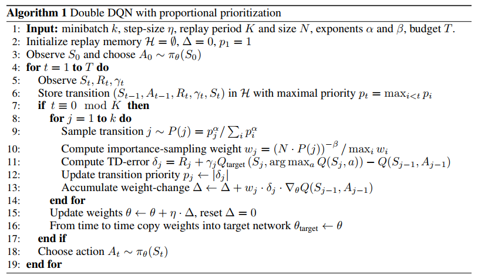
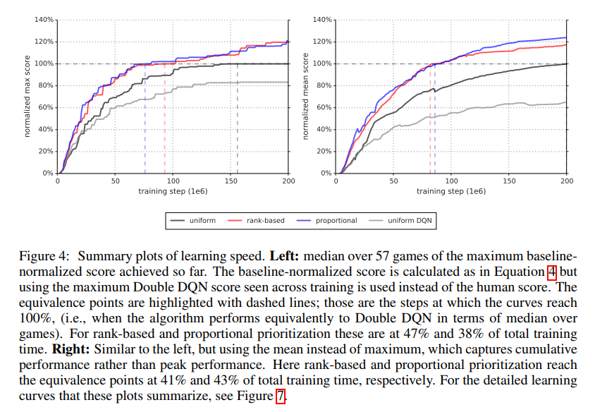

Prioritized Experience Replay
论文概述
本文提出越是重要的transitions越是应该采取更高的频率进行回放学习，以使得智能体学习更快。
论文解析
采样概率计算
transition的采样概率的计算公式：
$$
P(i)=\frac{p_i^{\alpha}}{\sum_k p_k^{\alpha}}
$$
其中$p_i>0$是transition i的优先级，指数$\alpha$决定了优先级被使用的程度，当$\alpha=0$的时候与均匀采样的情况相对应。
$p_i$的计算
$p_i$的计算论文提供了两种方法，第一种是直接的成比例的优先级，$p_i=|\delta_i|+\epsilon$,其中$\epsilon$是用来防止当误差为0的时候该transtion不再被访问的极端情况；第二种是间接的机遇优先级排序的方法，$p_i=\frac{1}{rank(i)}$,其中$rank(i)$就是transition i根据$\delta_i$在回放池中的排序。在这两种方法中，第二种健壮一些，因为它对异常值没有那么敏感。
从$p_i$的两种计算方式可以看出，误差$\delta_i$越大，被采样的概率就会越大，因为这种样本能学习到的信息越多，样本计算的梯度也会越大。
处理偏差
使用随机更新来估计期望值依赖于这些更新的分布和它的期望的分布是一致的。优先回放以一种不可控制的方式改变了这种分布引入了偏差，因此改变了估计会收敛到的解，所以得使用重要性采样来矫正该偏差.下面是重要性采样权重的计算公式：
$$
w_i=(\frac{1}{N}\cdot\frac{1}{P(i)})
$$
当$\beta=1$的时候完全补偿该偏差。该公式其实就是均匀分布概率$\frac{1}{N}$除以优先采样的概率$P(i)$，具体的重要性采样可以参考相关的文章。
在实际的实现中，该权重是可以被融入到Q-Learning的更新里面的，将$\delta_i$改为$w_i\delta_i$即可。作者还提到为了稳定，会将权重乘以$\frac{1}{\max_iw_i}$，这样一来IS只会降低更新值。
与Double DQN的结合算法

实验结果
学习速度的总结图：

有趣的点
- 该论文发现对Rewards和TD-errors进行clip操作会去掉异常值。